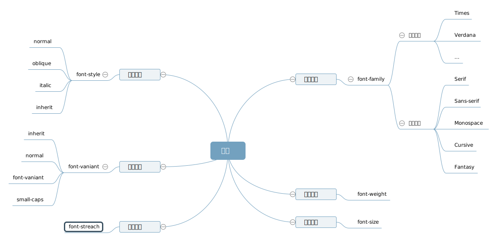

The image found in this paragraph  has its bottom edge aligned with the baseline of the text in the paragraph.
This paragraph contains superscripted and subscripted text.
This paragraph, as you can see quite clearly, contains a image and a image, and then some text that is not tall.
Here: a image, and then a